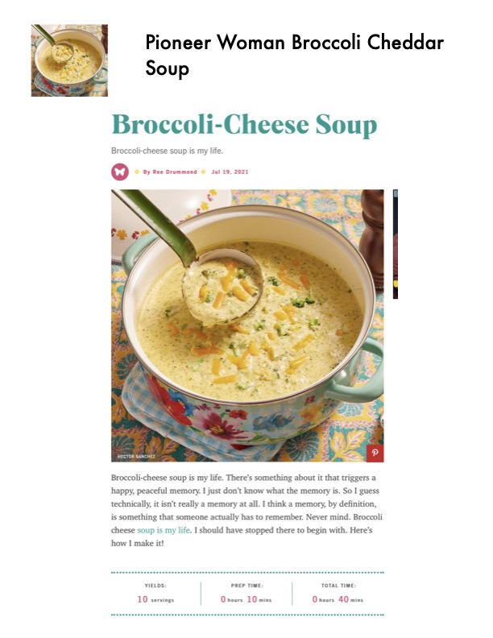

Broccoli Cheese Soup

Original cookbook page 201
A creamy broccoli cheese soup that can be served chunky, partially mashed, or fully pureed.
Prep: 10 minutes • Cook: 30 minutes • Total: 40 minutes
Ingredients
- 1 whole onion, diced
- 1 stick butter
- 1/3 c. flour
- 4 c. whole milk
- 2 c. half-and-half
- 4 heads broccoli cut into florets
- 1 pinch nutmeg
- 3 c. grated cheese (mild cheddar, sharp cheddar, jack, etc.)
- Small dash of salt (more if needed)
- Freshly ground black pepper
- 2 c. chicken broth, if needed for thinning
Instructions
- Melt butter in a pot over medium heat, then add the onions. Cook the onions for 3 to 4 minutes, then sprinkle the flour over the top. Stir to combine and cook for 1 minute or so, then pour in milk and half-and-half. Add nutmeg, then add broccoli, a small dash of salt, and plenty of black pepper.
- Cover and reduce heat to low. Simmer for 20 to 30 minutes, or until the broccoli is tender. Stir in cheese and allow to melt.
- Taste seasonings and adjust if needed. Then either serve as is, or mash it with a potato masher to break up the broccoli a bit, or transfer to a blender in two batches and puree completely. (If you puree it in a blender, return it to the heat and allow to heat up. Splash in chicken broth if needed for thinning.) Enjoy!
📝 Recipe Notes
Soup can be served in three textures: as is (chunky), partially mashed with a potato masher, or fully pureed in a blender. Chicken broth can be added if the soup needs thinning.
Recipe #201 from collection